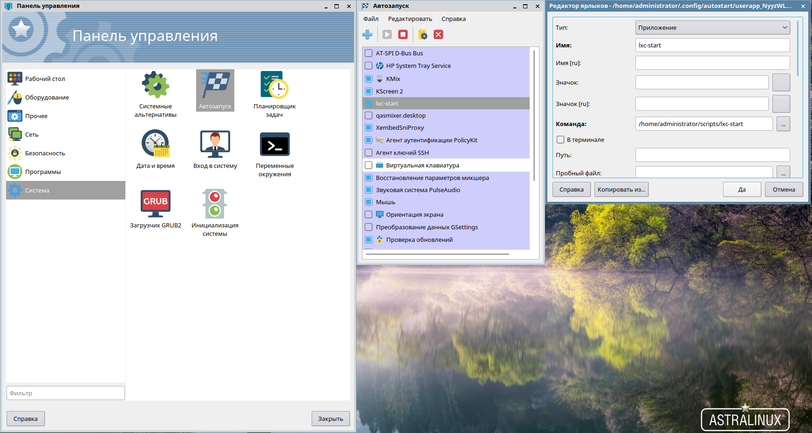

Опишу свой опыт установки и настройки LXC в пространстве пользователя (не root). Поскольку работа с контейнером в пространстве root накладывает некоторые ограничения и не очень удобна (для меня).
Если я выбрал не тот путь или пошел слишком длинной дорогой, надеюсь соратники меня поправят.
Что у меня есть:
Astra Linux Common Edition (Orel) 2.12.8;
Сетевой интерфейс eth0;
Учетная запись administrator.
1) Для начала устанавливаю собственно пакет lxc:
sudo apt install lxc
2) Проверяю всё ли прошло хорошо:
sudo lxc-checkconfig
3) Заодно посмотрю какие доступны контейнеры:
sudo ls /usr/share/lxc/templates/
4) Поскольку я не исключаю возможности в дальнейшем создавать контейнеры в пространстве root, то сразу сконфигурирую настройки по умолчанию для root. Для этого приведу файл "/etc/lxc/default.conf" к такому виду:
sudo nano /etc/lxc/default.conf
Код:
lxc.network.type = veth
lxc.network.link = br0
lxc.network.flags = up
5) Создаю сетевой мост на интерфейсе eth0, в который будут подключаться контейнеры. Для этого приведу файл "/etc/network/interfaces" к такому виду:
sudo nano /etc/network/interfaces
Код:
source /etc/network/interfaces.d/*
auto lo
iface lo inet loopback
auto br0
iface br0 inet dhcp
bridge_ports eth0
bridge_stp off
bridge_fd 0
bridge_maxwait 0
6) Перезагружаю систему, чтобы сетевые настройки вступили в силу (Результат команды "sudo service networking restart" немного насторожил, поэтому всё таки лучше перезагружу).
7) Теперь создаю каталог, в котором будут лежать настройки по умолчанию контейнеров в пространстве пользователя (administrator). (Взято отсюда)
mkdir -p ~/.config/lxc
8) Теперь сконфигурирую настройки по умолчанию для контейнеров в пространстве пользователя (administrator). (Взято отсюда)
Настраиваю пользовательские пространства имен:
echo "lxc.id_map = u 0 100000 65536" >> ~/.config/lxc/default.conf
echo "lxc.id_map = g 0 100000 65536" >> ~/.config/lxc/default.conf
Настраиваю сеть:
echo "lxc.network.type = veth" >> ~/.config/lxc/default.conf
echo "lxc.network.link = br0" >> ~/.config/lxc/default.conf
echo "lxc.network.flags = up" >> ~/.config/lxc/default.conf
9) Затем в файле /etc/lxc/lxc-usernet нужно разрешить использовать сетевые интерфейсы текущему пользователю, чтобы получить возможность запускать контейнер без root прав. (Взято отсюда)
echo "$USER veth br0 2" | sudo tee -a /etc/lxc/lxc-usernet
10) Для того чтобы пространства имен пользователей linux в контейнере работали, нужно присвоить своему пользователю подпространство UID и GID 100000-165536. (Взято отсюда)
sudo usermod --add-subuids 100000-165536 $USER
sudo usermod --add-subgids 100000-165536 $USER
11) Теперь запускаю LXC:
sudo service lxc start
12) Установлю контейнер в пространстве пользователя на базе ubuntu 18.10 с архитектурой i386 и назову его "ubuntu02":
lxc-create -t download -n ubuntu02 -- --dist ubuntu --release cosmic --arch i386
13) После установки сразу задам пароль "12345678" для пользователя "ubuntu" и пользователя "root" в контейнере. Для этого отредактирую файл "~/.local/share/lxc/ubuntu02/rootfs/etc/shadow", а именно приведу строки с этими пользователями к виду:
sudo nano ~/.local/share/lxc/ubuntu02/rootfs/etc/shadow
Код:
root:$6$THtH1yko$.rDzWsGt3Cem1.6iRBs/qklDVs2tGWvZzvYekIuUJo6tWH/xdW5vyGf57CJhIfxZZ.tWMyJJ9BxQlvAnGgrn50:17999:0:99999:7:::
ubuntu:$6$THtH1yko$.rDzWsGt3Cem1.6iRBs/qklDVs2tGWvZzvYekIuUJo6tWH/xdW5vyGf57CJhIfxZZ.tWMyJJ9BxQlvAnGgrn50:17999:0:99999:7:::
14) Проверю конфигурацию контейнера, она должна иметь такой вид:
nano ~/.local/share/lxc/ubuntu02/config
Код:
# Distribution configuration
lxc.include = /usr/share/lxc/config/ubuntu.common.conf
lxc.include = /usr/share/lxc/config/ubuntu.userns.conf
lxc.arch = linux32
# Container specific configuration
lxc.id_map = u 0 100000 65536
lxc.id_map = g 0 100000 65536
lxc.rootfs = /home/administrator/.local/share/lxc/ubuntu02/rootfs
lxc.rootfs.backend = dir
lxc.utsname = ubuntu02
# Network configuration
lxc.network.type = veth
lxc.network.link = br0
lxc.network.flags = up
Теперь если попытаться запустить контейнер от пользователя без прав root (administrator), то появятся ошибки, суть которых заключается в том, что у текущего пользователя не хватает прав. Если бы у текущего пользователя были права root, то контейнер бы запустился. Но если попытаться запустить этот контейнер от root, то root будет искать контейнер по адресу "/var/lib/lxc/", а там его соответственно нет. Решение нашел здесь, адаптировав его под ситуацию.
15) Добавлю прав домашней директории:
sudo chmod -R o+X $HOME
Теперь нужно установить пакет cgmanager.
16) Пакета cgmanager в репозитории astra linux нет. Поэтому подключаю репозиторий debian:
sudo echo "deb https://mirror.yandex.ru/debian/ stretch main contrib non-free" >> /etc/apt/sources.list
sudo apt update
17) Устанавливаю пакет:
sudo apt install cgmanager
18) Теперь отключаю репозиторий debian, для этого я вручную отредактирую файл /etc/apt/sources.list (удалю последнюю строку):
sudo vi /etc/apt/sources.list
sudo apt update
19) Теперь запускаю cgmanager:
sudo service cgmanager start
20) Теперь нужно выполнить "заветные" три команды, суть которых я не до конца понял:
sudo cgm create all user
sudo cgm chown all user $(id -u) $(id -g)
cgm movepid all user $$
21) И теперь наконец-то запускаю контейнер:
lxc-start -n ubuntu02 -d
Вот теперь вроде бы всё хорошо, но не совсем. После перезагрузки системы для запуска контейнера необходимо выполнить такой список команд:
sudo service lxc start
sudo service cgmanager start
sudo cgm create all user
sudo cgm chown all user $(id -u) $(id -g)
cgm movepid all user $$
lxc-start -n ubuntu02 -d
И это совсем не радует, поэтому:
22) LXC и cgmanager сразу ставим в автозагрузку:
sudo systemctl enable lxc
sudo systemctl enable cgmanager
Кроме того заметил, что три "заветные" команды из п.20 нужно выполнять непосредственно перед стартом контейнера. При чем если открыть 2 окна терминала и команды выполнить в одном, а контейнер запустить в другом, то контейнер не запустится. Углубляться в суть проблемы не стал (хотя стоило бы) и просто создал скрипт, который выполняет три "заветные команды" и сразу стартует контейнер.
23) Создаю каталог, в котором будет лежать скрипт:
mkdir ~/scripts
24) Создаю скрипт:
nano ~/scripts/lxc-start
Код:
sudo cgm create all user
sudo cgm chown all user $(id -u) $(id -g)
cgm movepid all user $$
lxc-start -n ubuntu02 -d
25) Выдаю файлу скрипта права на выполнение:
chmod +x ~/scripts/lxc-start
Теперь, если я захочу запустить контейнер, то я просто выполню этот скрипт (вот такой костыль).
Кроме всего, что уже сделано, мне нужно чтобы контейнер стартовал при запуске системы. Но этот контейнер существует только в пространстве моего пользователя (administrator), поэтому стартовать он должен после входа пользователя в систему. Поэтому я воспользуюсь "Автозапуском", который предлагает Astra Linux:
26) Захожу (в GUI) "Звезда/Панель управления/Система/Автозапуск" и нажимаю "Добавить приложение".
27) В строке "Имя" я указал "lxc-start". В строке "Команда" указываю "/home/administrator/scripts/lxc-start". Всё это сохраняю и закрываю.

28) Теперь у меня появился такой файл "~/.config/autostart/userapp_NyyzWL.desktop" с таким содержимым:
cat ~/.config/autostart/userapp_NyyzWL.desktop
Код:
[Desktop Entry]
Name=lxc-start
Type=Application
NoDisplay=false
Exec=/home/administrator/scripts/lxc-start
Hidden=false
Terminal=false
StartupNotify=false
29) Теперь перезагружаю систему и выполняю команду "lxc-ls -f". И вижу в колонке "State" напротив "ubuntu02" значение "RUNNING", этого я и добивался.
Симпатии: Понравилось ValerySV и Olej
vladimirk1211
New member
Сообщения
40
В продолжение предыдущего поста напишу как я запустил GUI приложение, на примере VLC.
Настраивал по этой статье, учитывая особенности, которые я описал в предыдущем посте.
1) Для начала надо поправить конфигурацию контейнера, поэтому останавливаю контейнер:
lxc-stop -n ubuntu02
2) В файле "~/.local/share/lxc/ubuntu02/config" удаляю строки:
nano ~/.local/share/lxc/ubuntu02/config
Код:
lxc.id_map = u 0 100000 65536
lxc.id_map = g 0 100000 65536
3) Вместо удаленных строк добавляю строки:
nano ~/.local/share/lxc/ubuntu02/config
Код:
lxc.id_map = u 0 100000 1000
lxc.id_map = g 0 100000 1000
lxc.id_map = u 1000 1000 1
lxc.id_map = g 1000 1000 1
lxc.id_map = u 1001 101001 64535
lxc.id_map = g 1001 101001 64535
# а эти строки дописываем в конец файла
lxc.mount.entry = /dev/dri dev/dri none bind,optional,create=dir
lxc.mount.entry = /dev/snd dev/snd none bind,optional,create=dir
lxc.mount.entry = /tmp/.X11-unix tmp/.X11-unix none bind,optional,create=dir
#lxc.mount.entry = /dev/video0 dev/video0 none bind,optional,create=file
lxc.hook.pre-start = /home/administrator/.local/share/lxc/ubuntu02/setup-pulse.sh
В итоге получаю файл с таким содержимым:
cat ~/.local/share/lxc/ubuntu02/config
Код:
#Distribution configuration
lxc.include = /usr/share/lxc/config/ubuntu.common.conf
lxc.include = /usr/share/lxc/config/ubuntu.userns.conf
lxc.arch = linux32
# Container specific configuration
lxc.id_map = u 0 100000 1000
lxc.id_map = g 0 100000 1000
lxc.id_map = u 1000 1000 1
lxc.id_map = g 1000 1000 1
lxc.id_map = u 1001 101001 64535
lxc.id_map = g 1001 101001 64535
lxc.rootfs = /home/administrator/.local/share/lxc/ubuntu02/rootfs
lxc.rootfs.backend = dir
lxc.utsname = ubuntu02
# Network configuration
lxc.network.type = veth
lxc.network.link = br0
lxc.network.flags = up
lxc.mount.entry = /dev/dri dev/dri none bind,optional,create=dir
lxc.mount.entry = /dev/snd dev/snd none bind,optional,create=dir
lxc.mount.entry = /tmp/.X11-unix tmp/.X11-unix none bind,optional,create=dir
#lxc.mount.entry = /dev/video0 dev/video0 none bind,optional,create=file
lxc.hook.pre-start = /home/administrator/.local/share/lxc/ubuntu02/setup-pulse.sh
Если в системе установлена видеокамера, то чтобы пробросить её в контейнер нужно раскомментировать строку "lxc.mount.entry = /dev/video0 dev/video0 none bind,optional,create=file".
4) Теперь создаю скрипт хука для автонастройки звука при старте контейнера:
nano ~/.local/share/lxc/ubuntu02/setup-pulse.sh
Код:
#!/bin/sh
PULSE_PATH=/home/administrator/.local/share/lxc/ubuntu02/rootfs/home/ubuntu/.pulse_socket
if [ ! -e "$PULSE_PATH" ] || [ -z "$(lsof -n $PULSE_PATH 2>&1)" ]; then
pactl load-module module-native-protocol-unix auth-anonymous=1
socket=$PULSE_PATH
fi
5) Выдаю файлу скрипта права на выполнение:
chmod +x ~/.local/share/lxc/ubuntu02/setup-pulse.sh
6) Узнаю uid и gid пользователя в основной системе (administrator):
id
Меня интересует вот этот фрагмент вывода команды "uid=1000(administrator) gid=1000(administrator)".
7) "Синхранизирую" uid и gid пользователя в основной системе и пользователя в контейнере:
sudo chown -R 1000:1000 ~/.local/share/lxc/ubuntu02/rootfs/home/ubuntu
8) Запускаю контейнер:
~/scripts/lxc-start
9) Захожу в консоль контейнера и авторизуюсь под root'ом:
lxc-console -n ubuntu02
10) Выполняю команды:
umount /tmp/.X11-unix
apt install vlc
sudo -u ubuntu mkdir -p /home/ubuntu/.pulse/
11) Выхожу из консоли контейнера:
Нажимаю сочетание клавиш "Ctrl+a", затем нажимаю клавишу "q".
12) Выполняю команду:
echo "disable-shm=yes" | lxc-attach -n ubuntu02 -- sudo -u ubuntu tee /home/ubuntu/.pulse/client.conf
13) И, наконец, создаю скрипт в основной системе на запуск vlc из контейнера:
nano ~/.local/share/lxc/ubuntu02/lxc-start-vlc
Код:
#!/bin/sh
lxc-attach --clear-env --name=ubuntu02 -- sudo -u ubuntu -i env DISPLAY=$DISPLAY PULSE_SERVER=/home/ubuntu/.pulse_socket vlc
Если нет необходимости в запуске контейнера при старте системы, то лучше вместо команды указанной выше, использовать полноценный скрипт из оригинальной статьи.
14) Выдаю файлу скрипта права на выполнение:
chmod +x ~/.local/share/lxc/ubuntu02/lxc-start-vlc
15) Ну и чтобы максимально упростить себе жизнь, создаю ярлык на рабочем столе на запуск скрипта, который запустит vlc:
nano ~/Desktops/Desktop1/vlc-ubuntu.desktop
Код:
[Desktop Entry]
Version=1.0
Name=vlc ubuntu
Name[ru]=vlc ubuntu
Comment=Media player
Exec=/home/administrator/.local/share/lxc/ubuntu02/lxc-start-vlc %U
Icon=vlc
Type=Application
Categories=AudioVideo;Player;Recorder;
16) Теперь перезагружу контейнер, чтобы все изменения вступили в силу:
lxc-stop -n ubuntu02
~/scripts/lxc-start
Для проверки того, что vlc заработает, скопировал в "~/.local/share/lxc/ubuntu02/rootfs/home/ubuntu/" файл "мой.mp3". Выключил в основной системе воспроизведение музыки (для чистоты эксперимента лучше выключить все приложения, связанные с воспроизведением звука). И запустил ярлык. У меня открылся vlc. Я открыл файл "/home/ubuntu/мой.mp3" и услышал воспроизведение файла.
Однако есть "проблема". Только одна система может использовать устройства вывода звука, либо основная система, либо контейнер. Если запустили музыку в контейнере, то в основной системе, параллельно запустить воспроизведение музыки не получится. И наоборот точно так же. "Кто первый встал, того и тапки".